C:\NGNEON> boot --neo-geo --neon
NGNEON-EMU
Emulador Neo Geo nativo en Rust con frontend SDL2/OpenGL, efectos CRT,
soporte de ROMs .neo y .zip, audio sincronizado,
controles configurables y RetroAchievements.
160/160 ZIP runtime OK
.neo estable
OpenGL CRT shader
RA rcheevos
NGNEON VIDEO BUS
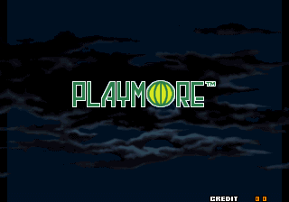
304×224 visible
59.185606 Hz MVS
Audio lock
ZIP Loader
FBNeo/MAME layout parity
RetroAchievements
Token + Hardcore mode
Qué es NGNEON-EMU
NGNEON-EMU es un emulador Neo Geo multiplataforma escrito en Rust. El núcleo mantiene la emulación desacoplada de la interfaz, y el frontend usa SDL2 + OpenGL para ofrecer baja latencia, efectos CRT y overlays nativos.
La filosofía del proyecto es clara: comportamiento verificable, comparación con referencias como Geolith/FBNeo y pruebas reales sobre la biblioteca local antes de dar una compatibilidad por buena.
Núcleo Rust
CPU 68000, Z80, memoria, LSPC, YM2610, save states y protecciones de cartucho.
Frontend nativo
SDL2 + OpenGL 3.3, overlays, selector BIOS, navegador ROM y configuración.
Web configurator
Launcher local con media, gamelist.xml, favoritos, recientes y panel RA.
Auditorías
Herramientas para probar carga, vídeo, audio, cadencia y arranque de ROMs.
01
Instalación y compilación
Guía base para Windows. También sirve como referencia para otros sistemas con Rust, SDL2 y OpenGL.
Instala Rust
Necesitas una toolchain Rust estable. En Windows se recomienda instalar Rust con rustup.
rustup updateCompila el workspace
Desde la raíz del proyecto:
cargo build --release --workspaceColoca BIOS y ROMs
Crea o usa las carpetas bios/, roms/ y
roms_zip/. El emulador no incluye BIOS ni juegos.
bios/neogeo.zip
roms/aof.neo
roms_zip/mslug.zipEjecuta
Puedes abrir una ROM directamente o arrancar la demo interna.
target\release\ngneon-emu.exe --demo
target\release\ngneon-emu.exe roms\aof.neo
target\release\ngneon-emu.exe roms_zip\mslug.zip
02
Uso diario
Flujo recomendado para jugar, configurar, probar y mantener tu biblioteca.
ROMs .neo y .zip
Usa .neo para paquetes estilo NeoSD/TerraOnion y
.zip para sets compatibles con estructura FBNeo/MAME.
target\release\ngneon-emu.exe roms\garou.neo
target\release\ngneon-emu.exe roms_zip\garou.zipDesde el emulador abre el navegador con Ctrl + O.
BIOS
Coloca neogeo.zip o aes.zip en bios/.
El selector se abre con Ctrl + B.
[INFO] BIOS activa: neogeo.zip:sp-s2.sp1
[INFO] Tabla L0 activa: neogeo.zip:000-lo.lo
[INFO] SFIX activa: neogeo.zip:sfix.sfixVídeo
Activa scanlines, curvatura y bloom desde teclado o desde el menú Ctrl + S. Mantén 4:3 si quieres aspecto original.
- F2: scanlines
- F3: curvatura CRT
- F4: bloom
- F11: pantalla completa
Audio sincronizado
El frontend conserva el resto fraccional de samples por frame para evitar drift. El volumen se controla desde el menú o con atajos.
- Ctrl + M: mute
- Ctrl + =: subir volumen
- Ctrl + -: bajar volumen
Save states
Hay 10 slots por ROM, miniaturas y auto-save opcional.
- F9: guardar estado
- F10: cargar estado
- F7 / Shift + F7: cambiar slot
- Ctrl + F12: gestor de save states
03
Controles principales
Atajos esenciales para jugar, depurar y configurar sin salir del emulador.
Juego
- Flechas
- Direcciones jugador 1
- Z / X / C / V
- Botones A / B / C / D
- Enter
- Start
- Space
- Coin
Sistema
- Esc
- Salir o cerrar overlay
- F1
- Cargar ROM
- F5
- Demo interna
- F8
- Reset CPU
Overlays
- Ctrl+O
- ROM Browser
- Ctrl+S
- Settings
- Ctrl+B
- BIOS Selector
- Ctrl+G
- Gamepad Config
Diagnóstico
- F6
- Debug overlay
- F12
- Screenshot BMP
- --no-dump-rom-banks
- Desactivar dumps ROM
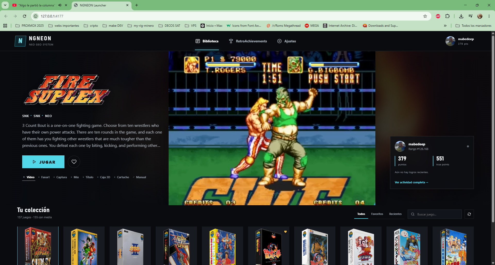
Configurador web local
NGNEON incluye un launcher web local para navegar la biblioteca con media, lanzar juegos y consultar RetroAchievements sin exponer secretos al navegador.
cd configurator
corepack pnpm install
corepack pnpm build
corepack pnpm startDespués abre:
http://127.0.0.1:4177- Lee
roms/gamelist.xml. - Usa vídeos, fanart, capturas, cajas 3D, cartuchos y manuales.
- Soporta favoritos, recientes y búsqueda.
- Puede mostrar perfil, últimos juegos y logros de RetroAchievements.
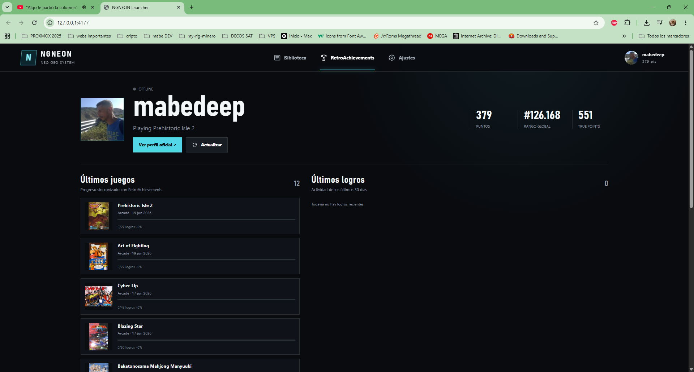
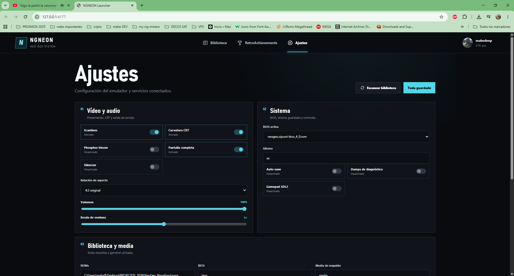
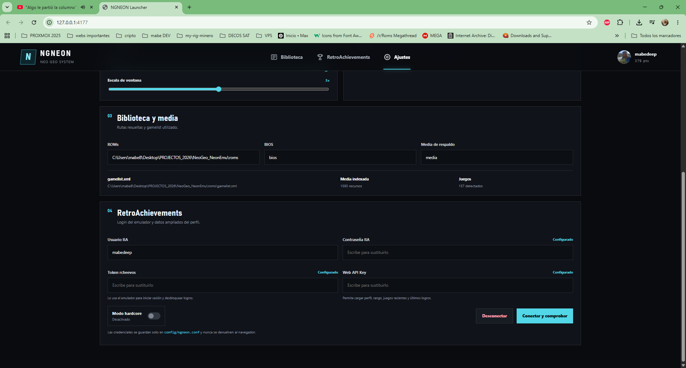
05
RetroAchievements
Integración con rcheevos para login, hardcore mode y estado de logros.
Config en config/ngneon.conf
ra_token=
ra_username=
ra_password=
ra_hardcore=off
Si hay ra_token, se usa antes que usuario/contraseña.
Para el configurador web, la API key se guarda y no se devuelve al cliente.
Panel RA
Perfil, puntos, rango, juegos recientes, progreso y últimos logros.
Hardcore
Login automático
Notificaciones
06
Compatibilidad y auditoría
NGNEON no se queda en “carga el archivo”: audita arranque, vídeo, audio y cadencia.
Resultado ZIP final
Auditoría runtime sobre la biblioteca local:
[SUMMARY] total=160 loaded=160 load_failed=0 runtime_passed=160 runtime_review=0 runtime_failed=0 max_frames=1200Comandos útiles
cargo test -p core-emulator rom::tests:: -- --test-threads=1
cargo run --release -p core-emulator --bin audit_zip_library -- roms_zip
cargo run --release -p core-emulator --bin audit_neo_library -- roms_zip 1200
07
Capturas
Capturas directas del framebuffer mostrando ROMs cargadas y renderizando en NGNEON-EMU.
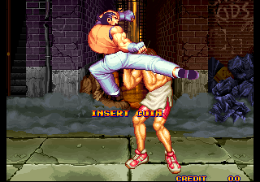
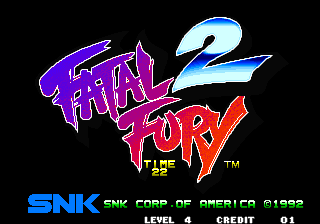
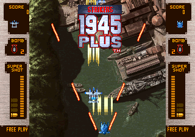
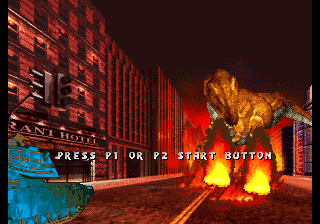
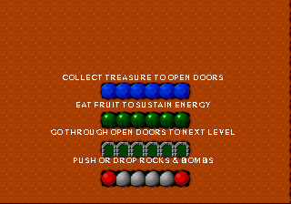
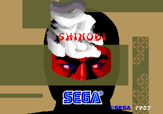
08
Estructura del proyecto
Mapa rápido de carpetas para quien clone el repositorio.
NeoGeo_NeonEmu/
├─ core-emulator/ Núcleo Neo Geo en Rust
├─ frontend/ SDL2 + OpenGL + overlays
├─ configurator/ Launcher web local
├─ bios/ BIOS aportadas por el usuario
├─ roms/ ROMs .neo
├─ roms_zip/ ROMs .zip
├─ config/ Configuración persistente
├─ saves/ Save states
├─ screenshots/ Capturas, WAVs y dumps diagnóstico
└─ webhub/ Esta web para GitHub Pages